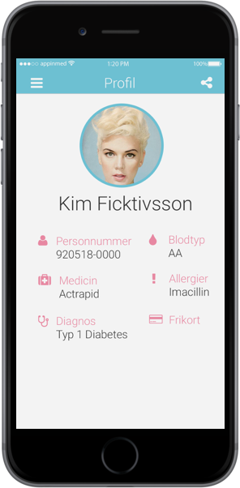
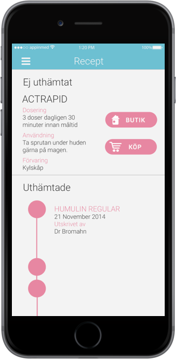
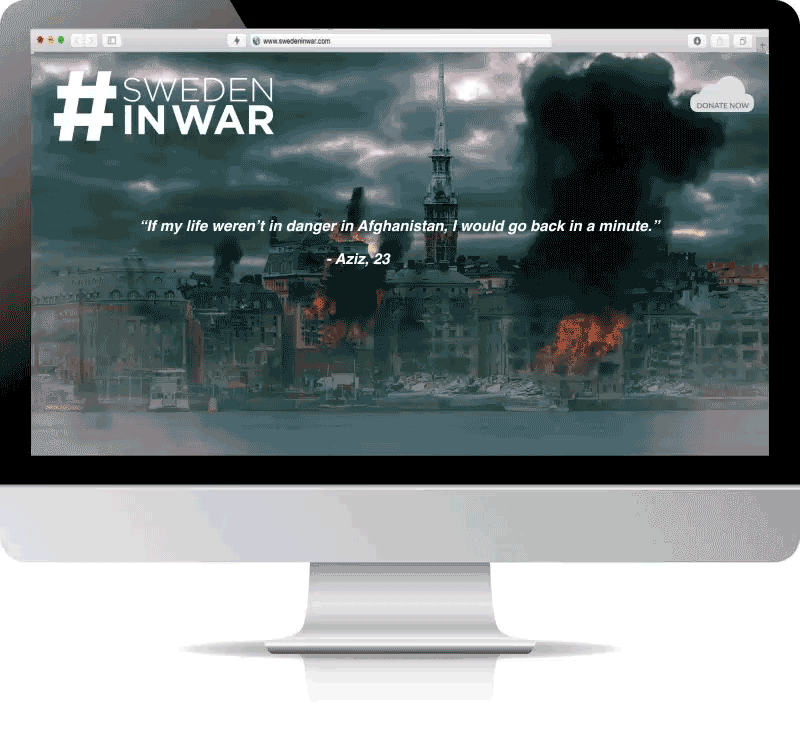
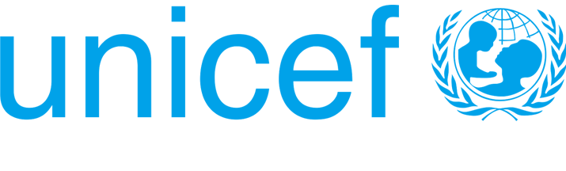
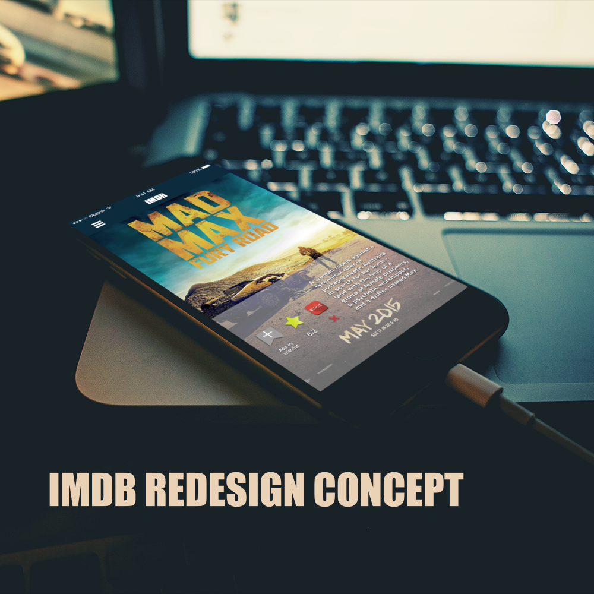

YOU HAD ME AT HELLO!
I consider myself a cinematic storyteller because of my background in film. I'm now trying to incorporate those skills in a digital world while exploring the landscapes of design and development.
Knowledge in Video Editing, After Effects, HTML/CSS, and a kickass storytelling skill
SHOWREEL


Vårdkollen
CLIENT: APP IN MED
ROLE: Creative Director/UX Designer
DESCRIPTION: Vårdkollen is a concept/prototype app created for App in Med. It gives the patients the control of their own healthcare through an online journal and an advanced booking system. The concept and prototype was done in collaboration with Christian Ghanime, Rebecca Fexby, Michelle Welin and Maja Bergendahl.
Read More

CLIENT: Student Project
ROLE: Creative Director/VFX Designer
DESCRIPTION: Sweden in War is a website with the purpose of aiding the refugee cause. It attempts to put viewers in a hypothetical situation where we follow a young swedish woman trying to find shelter in a war torn Sweden. The concept and development was done in collaboration with Julia Staberg, David Hultgren, Niklas Persson and Therese Lamo.
Check out website
VFX


Operations Dagsverke
CLIENT: Unicef
ROLE: Creative Director/Video Editor
DESCRIPTION: Unicef came to us with a brief on how to attract young teenagers and get them involved with Operations Dagsverke. We created this promotional video with the concept on developing a virtual reality setting where Swedish kids get to follow the life of a disabled kid in Mongolia who is struggeling to get to school. This project was developed in collaboration with David Anastacio, Helin Sarac, Emma Ohlsson and Johanna Schubert.
Read More

IMDB Redesign
CLIENT: Student Project
ROLE: Creative Director/Video Editor
DESCRIPTION: The IMDb app is very content heavy, and is basically a copy of the website in an app form. We decided to simplify the content, and used a "less is more" approach to the design. This project was designed in collaboration with Wesley Pires, Hanna Sjöblom and Elin Sjöblom.